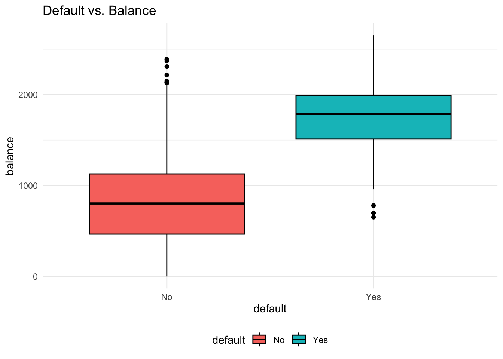
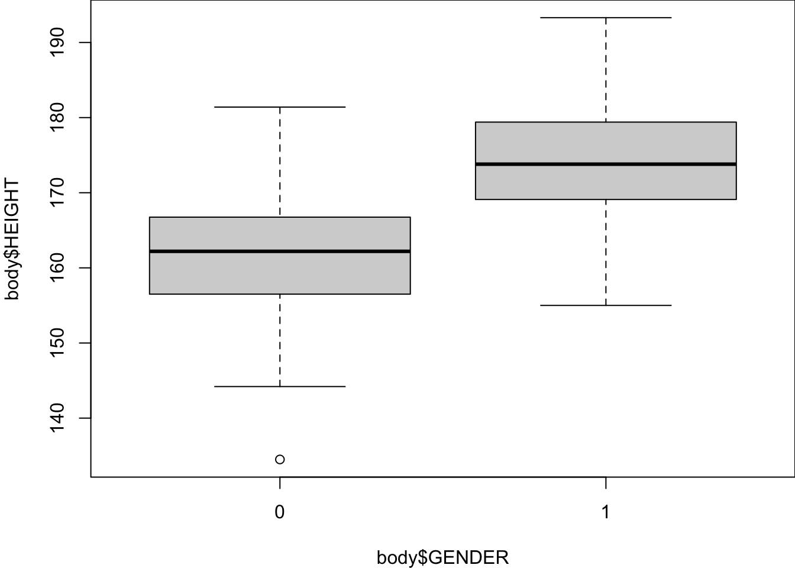

28 Logistic Regression
We already finished the discussion of linear regression. There are a lot of different regression models and regression problems that can be discussed. If you want to learn more about regression, take regression analysis or machine learning courses. In this chapter, we will be switching to the topic of classification which is another huge and popular topic. Specifically, we talk about logistic regression. There are many other classification methods out there, for example K-nearest neighbors, generalized additive models, trees, random forests, boosting, support vector machines, etc. Each method has it own advantages and disadvantages, and no one method dominates all. If you are interested in classification and want to learn more about classification methods, take a statistical machine learning course.
28.1 Regression vs. Classification
Linear regression assumes that the response \(Y\) is numerical (quantitative). In many situations, however, the response we would like to infer or predict on is categorical (qualitative), eye color, car brand, true vs. fake news for example.
A process of predicting categorical response is known as classification. There are many classification tools, or classifiers used to predict a categorical response. For instance, logistic regression is a classifier.
Normal vs. COVID vs. Smoker’s Lungs
Fake vs. Fact

Regression Function \(f(x)\) vs. Classifier \(C(x)\)
Like regression, we have our predictor inputs \(X_1, \dots, X_p\), through a classifier \(C(x)\) that takes all the predictors and then generate a predicted value of \(y\), which is categorical. For example, we collect a person’s nationality, race, hair color, build a classifier, then predict his eye color.
Here, the classifier \(C(x)\) in classification problem is analogous to the regression function \(f(x) = \beta_0 + \beta_1X_1 + \cdots + \beta_pX_p\) in the regression problem. The classifier \(C(x)\) is used to predict a categorical variable \(y\) and regression function \(f(x)\) is used to predict the value of a numerical variable \(y\).
In machine learning, it usually separates regression and classification apart, one for numerical response, the other for categorical response. But the term regression in general means any relationship between response variables and predictors, including both numerical and categorical responses. So the definition of regression in machine learning is a little bit narrow scoped. A regression model in general can deal with either numerical response or the regression problem in machine learning, or categorical response or the classification problem. That’s why we can use a logistic regression to do classification problems.


Classification Example
- Predict whether people will default on their credit card payment, where \((Y)\) is
yesorno, based on their monthly credit card balance, \((X)\). - We use the sample data \(\{(x_1, y_1), \dots, (x_n, y_n)\}\) to build a classifier.


Why Not Linear Regression?
Before we jump into logistic regression, one question is, why not just fit a linear regression model? That is, we define 0 as not default and 1 as default, and treat 0 and 1 as numerical values, and run a linear regression model, like
\(Y = \beta_0 + \beta_1X + \epsilon\), \(\, X =\) credit card balance, and
\[Y =\begin{cases} 0 & \quad \text{if not default}\\ 1 & \quad \text{if default} \end{cases}\]
In fact, the predicted valued of \(Y\), \(\hat{Y} = b_0 + b_1X\), estimates \(P(Y = 1 \mid X) = P(default \mid balance)\) which is actually what we want. So what’s the issue of linear regression? Look at the figure below. You can see that this is not like usual scatter plot when \(y\) is numerical, this scatter plot is pretty strange that \(y\) is either 0 or 1, the red and green points. This blue line is our linear regression line. Any point on the line is the estimated probability of default given a value of \(X\). Do you see any issues of using linear regression to fit this type of data?
First, probability is always between 0 and 1, but some estimates here are outside the \([0, 1]\) interval. For example, when the credit card balance is below 500, the estimated probability of default is negative, which is not allowed mathematically.
Also, we assume the probability of default is linearly increasing with credit card balance, which is generally not true in reality.
In addition, the dummy variable approach \((Y = 0, 1)\) cannot be easily extended to \(Y\) with more than two categories. If we have 3 categories with nominal level of measurements, like car brand and eye color, coding the categories with 1, 2, 3 forces them to be ordered, the forces them to have the same difference. It does not make sense.
As a result, we need to use a model that is appropriate for categorical responses, like logistic regression.
Why Logistic Regression?
Some classification methods, logistic regression for example, first predict the probability of each category of \(Y\). Then, the logistic regression predicts the probability of default using an S-shaped curve.
You can see the estimated probability curve is always between 0 and 1 and higher balance leads to higher chance of default. If our cut-off or threshold probability is 0.5, \(y\) will be labeled as default when the balance is over about 2000 dollars. Our goal is to learn how to generate this predicted probability curve using logistic regression.

28.2 Introduction to Logistic Regression
Binary Responses
The story starts with the binary response. The idea is that we treat each default \((y = 1)\) and not default \((y = 0)\), as success and failure arising from separate Bernoulli trials.
Nonconstant Probability
Two outcomes: Default \((y = 1)\) and Not Default \((y = 0)\)
The probability of success, \(\pi\), changes with the value of predictor, \(X\)!
With a different value of \(x_i\), each Bernoulli trial outcome, \(y_i\), has a different probability of success, \(\pi_i\).

\[ y_i \mid x_i \stackrel{indep}{\sim} \text{Bernoulli}(\pi(x_i)) = binomial(m=1,\pi = \pi(x_i)) \]
-
\(X =\)
balance. \(x_1 = 2000\) has a larger \(\pi_1 = \pi(2000)\) than \(\pi_2 = \pi(500)\) with \(x_2 = 500\) because credit cards with a higher balance are more likely to default.
The idea of nonconstant probability in logistic regression is similar to the idea of different mean response value in linear regression. In linear regression, the mean response level is linearly affected by the predictor’s value, \(E(Y \mid X) = \beta_0 + \beta_1X\). In logistic regression, \(\pi(x) = P(Y = 1 \mid X = x)\) is a function of \(X\). In our example, the higher value of \(X\), the higher value of \(\pi\), although their relationship is not linear. The fact that the regressor \(X\) affects the mean response level or the probability of the response belonging to some category is the reason why we use regression. Through the relationship between the response and regressors, knowing \(X\) better helps us know the value of \(Y\).
Because of this Bernoulli assumption, the logistic regression is also called binomial regression.
Logistic Regression
Now it’s time to see what the logistic regression is. Logistic regression models a binary response \((Y)\) using predictors \(X_1, \dots, X_k\).
- \(k = 1\): simple logistic regression
- \(k > 1\): multiple logistic regression
But remember, we are not predicting \(Y\) directly. Instead, our goal is to use predictors \(X_1, \dots, X_k\) to estimate the probability of success \(\pi\) of the Bernoulli variable \(Y\). And if \(\pi > threshold\), say 0.5, \(\hat{Y} = 1\), if \(\pi < threshold\), \(\hat{Y} = 0\). But how?
Now that it’s not good to use \(y = 0, 1\) in the regression, and predicting a probability having value between 0 and 1 sounds difficult. How about this. we transform \(\pi \in (0, 1)\) into another variable say \(\eta \in (-\infty, \infty)\) living on the whole real line. So that we can reasonably fit a linear regression on \(\eta\) because the linear predictor could be any value.
In the logistic regression, we use the logit function:
\(\eta = logit(\pi) = \ln\left(\frac{\pi}{1-\pi}\right)\)
which is in fact the log odds. This transformation is monotone. The higher \(\pi\) is, the larger \(\eta\) is. When \(\pi\) approaches to zero, \(\eta\) approaches to \(-\infty\), and when \(\pi\) approaches to 1, \(\eta\) approaches to \(\infty\).
Then we can assume \(\eta\) is a linear function of \(x\):
\[\eta(x) =\ln \left( \frac{\pi(x)}{1 - \pi(x)} \right)= \beta_0 + \beta_1x\] By doing so, we connect \(x\) and \(\pi\) (and \(\eta\)) together, and we can learn how \(x\) affect \(\pi\) (and \(\eta\)) through the coefficients \(\beta_0\) and \(\beta_1\).
Well, the question is, if we obtain the \(\beta_0\) and \(\beta_1\) estimates, and therefore obtain \(\eta\) estimated value, how do we obtain \(\pi(x)\), our real interest? We can consider transform \(\eta\) back to \(\pi\) using the inverse function of the logit function, which is the logistic function.
So the logit function \(\eta = logit(\pi) = \ln\left(\frac{\pi}{1-\pi}\right)\) takes a value \(\pi \in (0, 1)\) and maps it to a value \(\eta \in (-\infty, \infty)\). But the logistic function denoted as \[\pi = logistic(\eta) = \frac{\exp(\eta)}{1+\exp(\eta)} = \frac{1}{1+\exp(-\eta)} \in (0, 1)\] takes a value \(\eta \in (-\infty, \infty)\) and maps it to a value \(\pi \in (0, 1)\).
So once \(\eta\) is estimated by the linear predictor, we use the logistic function to transform \(\eta\) back to the probability. The figure below shows a logistic function. This logistic function is a function of \(x\), and it describes the probability \(\pi\). This S-shaped curve is what we want to estimate given the data, and we use this curve to do classification on \(y\).
28.3 Simple Logistic Regression Model
To sum up, here shows a simple logistic regression model: For \(i = 1, \dots, n\) and with one predictor \(X\),
\[(Y_i \mid X = x_i) \stackrel{indep}{\sim} \text{Bernoulli}(\pi(x_i))\] \[\text{logit}(\pi_i) = \ln \left( \frac{\pi(x_i)}{1 - \pi(x_i)} \right) = \eta_i = \beta_0+\beta_1 x_{i}\]
Each \(Y_i\) is a Bernoulli variable with the probability of success \(\pi_i(x_i)\) which depends on its corresponding regressor \(x_i\) value. The nonlinear relationship between \(\pi_i(x_i)\) and \(x_i\) is described through a linear relationship on its logit transformation. Put it another way, we have \[\small \pi_i = \frac{\exp(\beta_0+\beta_1 x_{i})}{1+\exp(\beta_0+\beta_1 x_{i})} = \frac{\exp(\eta_i)}{1 + \exp(\eta_i)}\]
Once we get the estimates \(\hat{\beta}_0\) and \(\hat{\beta}_1\), we can simply plug them into the logistic function to get the estimated probability \(\hat{\pi}_i\).
\[\small \hat{\pi}_i = \frac{\exp(\hat{\beta}_0+\hat{\beta}_1 x_{i} )}{1+\exp(\hat{\beta}_0+\hat{\beta}_1 x_{i})}\] If we consider a sequence of possible values of \(x_i\), and their estimated probability \(\hat{\pi}_i\), the collection of \(\{ x_i \}\) and \(\{ \hat{\pi}_i \}\) will give us the S-shaped probability curve.
Probability Curve
The relationship between \(\pi(x)\) and \(x\) is not linear! \[\pi(x) = \frac{\exp(\beta_0+\beta_1 x)}{1+\exp(\beta_0+\beta_1 x)}\]
Because of the S-shaped curve, the amount that \(\pi(x)\) changes due to a one-unit change in \(x\) depends on the current value of \(x\). \(\pi(x = 2000)\) would change much larger than \(\pi(x = 1000)\) with one-unit change in \(x\).
Regardless of the value of \(x\), if \(\beta_1 > 0\), increasing \(x\) will increase \(\pi(x)\) because the slope of the S-shape curve is positive.
Interpretation of Coefficients
The ratio \(\frac{\pi}{1-\pi} \in (0, \infty)\) is called the odds of having \(y=1\).
Example: If 1 in 5 people will default, the odds is 1/4 since \(\pi = 0.2\) implies an odds of \(0.2/(1−0.2) = 1/4\).
\[\ln \left( \frac{\pi(x)}{1 - \pi(x)} \right)= \beta_0 + \beta_1x\]
- Increasing \(x\) by one unit changes the log-odds by \(\beta_1\), or it multiplies the odds by \(e^{\beta_1}\).
Note
\(\beta_1\) does not correspond to the change in \(\pi(x)\) associated with a one-unit increase in \(x\).
\(\beta_1\) is the change in log odds associated with one-unit increase in \(x\).
28.4 Logistic Regression in R
We use the body data to demonstrate the implementation of logistic regression. The response variable is GENDER, and the predictor is HEIGHT. We would like to use logistic regression to predict whether a person is male or female using the height information of that person.
In the data,
GENDER = 1if maleGENDER = 0if female
The unit of HEIGHT is centimeter (cm) (1 cm = 0.3937 in).
body <- read.table("./data/body.txt", header = TRUE)
head(body) AGE GENDER PULSE SYSTOLIC DIASTOLIC HDL LDL WHITE RED PLATE WEIGHT HEIGHT
1 43 0 80 100 70 73 68 8.7 4.80 319 98.6 172.0
2 57 1 84 112 70 35 116 4.9 4.73 187 96.9 186.0
3 38 0 94 134 94 36 223 6.9 4.47 297 108.2 154.4
4 80 1 74 126 64 37 83 7.5 4.32 170 73.1 160.5
5 34 1 50 114 68 50 104 6.1 4.95 140 83.1 179.0
6 77 1 60 134 60 55 75 5.7 3.95 192 86.5 166.7
WAIST ARM_CIRC BMI
1 120.4 40.7 33.3
2 107.8 37.0 28.0
3 120.3 44.3 45.4
4 97.2 30.3 28.4
5 95.1 34.0 25.9
6 112.0 31.4 31.1Again, we are not using gender to predict someone’s height, which is usually done by linear regression. Instead, our response variable is a binary categorical variable, and we are doing classification with a numeric predictor.
Data Summary
A basic data summary by gender tells us that height plays a role in distinguish male from female, so using height to classify gender would be helpful.
table(body$GENDER)
0 1
147 153 summary(body[body$GENDER == 1, ]$HEIGHT) Min. 1st Qu. Median Mean 3rd Qu. Max.
155.0 169.1 173.8 174.1 179.4 193.3 summary(body[body$GENDER == 0, ]$HEIGHT) Min. 1st Qu. Median Mean 3rd Qu. Max.
134.5 156.5 162.2 161.7 166.8 181.4 boxplot(body$HEIGHT ~ body$GENDER)
Model Fitting
We use the function glm() in R to fit a logistic regression model. “glm” means generalized linear model (GLM). Linear regression is a linear model, and it is a normal model because the response variable is normally distributed given \(x\). The models for non-normal response variables generalizes the linear regression model, and hence belong to GLM. The logistic regression whose response is Bernoulli or binomial distributed is a GLM. There are other GLMs such as Poisson regression and gamma regression. They are often discussed in the second course of Linear Models or a separate Generalized Linear Models course.
In the function, we use the same formula syntax as lm(), and one additional job we need to do is specify the family of the GLM. family = "binomial" should be used because the logistic regression is a binomial regression.
logit_fit <- glm(GENDER ~ HEIGHT, data = body, family = "binomial")
(summ_logit_fit <- summary(logit_fit))
Call:
glm(formula = GENDER ~ HEIGHT, family = "binomial", data = body)
Coefficients:
Estimate Std. Error z value Pr(>|z|)
(Intercept) -40.54809 4.63084 -8.756 <2e-16 ***
HEIGHT 0.24173 0.02758 8.764 <2e-16 ***
---
Signif. codes: 0 '***' 0.001 '**' 0.01 '*' 0.05 '.' 0.1 ' ' 1
(Dispersion parameter for binomial family taken to be 1)
Null deviance: 415.77 on 299 degrees of freedom
Residual deviance: 251.50 on 298 degrees of freedom
AIC: 255.5
Number of Fisher Scoring iterations: 5summ_logit_fit$coefficients Estimate Std. Error z value Pr(>|z|)
(Intercept) -40.5480864 4.63083742 -8.756102 2.021182e-18
HEIGHT 0.2417325 0.02758399 8.763507 1.892674e-18Based on the fitted result, we learn that \[\hat{\eta}(x) = \ln \left( \frac{\hat{\pi}(x)}{1 - \hat{\pi}(x)}\right) = \ln (\text{odds}_{x}) = \hat{\beta}_0 + \hat{\beta}_1x = -40.55 + 0.24 \times \text{HEIGHT}\]
Since \(\hat{\eta}(x+1) = \hat{\beta}_0 + \hat{\beta}_1(x+1)\), \(\hat{\eta}(x+1) - \hat{\eta}(x) = \hat{\beta}_1 = \ln(\text{odds}_{x+1}) - \ln(\text{odds}_{x}) = \ln \left( \frac{\text{odds}_{x+1}}{\text{odds}_{x}} \right)\)
A one centimeter increase in HEIGHT increases the log odds of being male by 0.24 units.
The odds ratio, \(\widehat{OR} = \frac{\text{odds}_{x+1}}{\text{odds}_{x}} = e^{\hat{\beta}_1} = e^{0.24} = 1.273\). Therefore, the odds of being male increases by 27.3% with an additional one centimeter of HEIGHT.
Prediction
Knowing how the predictor affects the chance of response belonging to some category is one goal. But in classification, we usually focus more on prediction. For example, we may want to know Pr(GENDER = 1) when HEIGHT is 170 cm.
Once we obtain the coefficient estimates and the predictor value, we just need to plug them into the logistic function to obtain the probability we want.
\[ \hat{\pi}(x = 170) = \frac{\exp(\hat{\beta}_0+\hat{\beta}_1 x)}{1+\exp(\hat{\beta}_0+\hat{\beta}_1 x)} = \frac{\exp(-40.55+0.24 \times 170)}{1+\exp(-40.55+0.24 \times 170)} = 0.633 = 63.3\%\]
Through the formula, we learn that from our model, when a person is 170cm tall, the probability that this person is male is about 63/3%.
predict(logit_fit, type = "response") gives us a vector of \(\hat{\pi}(x_i)\) of all responses in the data. When type = "link", predict() gives us \(\hat{\eta}(x_i)\) because in literature, \(\eta(x) = \ln \left( \frac{\hat{\pi}(x)}{1 - \hat{\pi}(x)}\right)\) is called the link function. To predict a specific probability at some \(x\) value, we use newdata = data.frame(HEIGHT = 170). Remember the variable name should be exactly the same as the name in the original data set.
pi_hat <- predict(logit_fit, type = "response")
eta_hat <- predict(logit_fit, type = "link") ## default gives us b0 + b1*x
predict(logit_fit, newdata = data.frame(HEIGHT = 170), type = "response") 1
0.6333105 Probability Curve
predict(logit_fit, newdata = data.frame(HEIGHT = c(160, 170, 180)), type = "response") 1 2 3
0.1334399 0.6333105 0.9509103 The blue S-shaped curve is the estimated probability curve. It can be plotted using pi_hat.
- 160 cm, Pr(male) = 0.13
- 170 cm, Pr(male) = 0.63
- 180 cm, Pr(male) = 0.95
28.5 Evaluation Metrics
Having probabilities is just a intermediate step. Most of the time our final goal is to classify our response, doing a binary decision. Given a predicted probability, we may correctly classify the label, or mis-classify the label. To know whether or not our model does a good job on classification, we need some evaluation metrics.
First, we can use a tool called a confusion matrix to display all possible outcomes in a binary classification scenario. In this context, let’s designate 0 as Negative and 1 as Positive, regardless of what these values represent. If the actual truth is 0 and we classify the response as 0, this outcome is a True Negative (TN), meaning we made a correct decision. However, if we classify the response as 1 instead, we commit an error, resulting in a False Positive (FP). In this case, the true condition is Negative, but our model incorrectly predicts it as Positive.
Similarly, if the truth is 1 and we correctly predict it as 1, the classification is accurate and is called a True Positive (TP). However, if we incorrectly label a response as Negative when it is actually Positive, we make a False Negative (FN).
| 0 | 1 | |
|---|---|---|
| Labeled 0 | True Negative (TN) | False Negative (FN) |
| Labeled 1 | False Positive (FP) | True Positive (TP) |
A good classifier accurately identifies a high number of TNs and TPs while minimizing FNs and FPs. Commonly used performance measures include Sensitivity (True Positive Rate), Specificity (True Negative Rate), and Accuracy.
Sensitivity (True Positive Rate, TPR) \(= P( \text{Labeled 1} \mid \text{1}) = \frac{TP}{TP+FN}\) measures the classifier’s ability to correctly identify positive cases or make correct discoveries when the actual responses are truly Positive. It reflects how well the model detects actual positives.
Specificity (True Negative Rate, TNR) \(= P( \text{Labeled 0} \mid \text{0}) = \frac{TN}{FP+TN}\) measures the percentage of correctly labeled negatives among the actual negative responses. It indicates how effectively the model avoids false alarms by accurately identifying negatives.
Accuracy \(= \frac{TP + TN}{TP+FN+FP+TN}\) considers both negatives and positives, measuring the overall proportion of correct classifications across the entire dataset. It provides a general assessment of the classifier’s performance by accounting for the total number of correct predictions out of all predictions made.
More on Wiki page
Example: Confusion Matrix
To produce a confusion matrix, we need two things: the true response labels, and the classification from the model. In the example, the true labels are just body$GENDER data. For the classification result, we need to make a binary decision from the estimated probabilities obtained from the model. Here we use 0.5 as the threshold. If \(\hat{\pi}(x) > 0.5\), then we label the response as 1, and 0 otherwise. We then can simply use table() function to generate a confusion matrix.
prob <- predict(logit_fit, type = "response")
## true observations
gender_true <- body$GENDER
## predicted labels
gender_predict <- (prob > 0.5) * 1
## confusion matrix
table(gender_predict, gender_true) gender_true
gender_predict 0 1
0 118 29
1 29 124The true positive rate is 124/(124+29) = 0.81, and the true negative rate is 118/(118+29) = 0.803. The overall accuracy is (124 + 118) /(124 + 29 + 29 + 118) = 0.807.
A commonly used visualization tool for assessing the classification performance is the receiver operating characteristic (ROC) curve. 1 This curve plots True Positive Rate (Sensitivity) vs. False Positive Rate (1 - Specificity). The confusion matrix provides the classification result for a single threshold, typically 0.5 in many cases. However, by adjusting the threshold, we can obtain different classification outcomes. For example, if \(\hat{\pi}(x) = 0.57\), and the cutoff is set at 0.5, \(\hat{y} = 1\) (Positive). However, if we increase the cutoff to 0.6, \(\hat{y} = 0\) (Negative). The ROC curve helps visualize how the classifier’s performance changes across various thresholds, allowing us to evaluate its overall effectiveness.
The ROC curve effectively illustrates how sensitivity and specificity change across every possible cutoff value between 0 and 1. When the cutoff is small, it becomes more likely that \(\hat{\pi}(x) > cutoff\), resulting in more Positives and fewer Negatives. As a result, sensitivity increases (TP \(\uparrow\) and FN \(\downarrow\)) while specificity decreases (TN \(\downarrow\) and FP \(\uparrow\)), causing 1 - specificity to rise. Conversely, when the cutoff is large, it is more likely that \(\hat{\pi}(x) < cutoff\), resulting in fewer Positives and more Negatives. This leads to a decrease in sensitivity (TP \(\downarrow\) and FN \(\uparrow\)) and an increase in specificity (TN \(\uparrow\) and FP \(\downarrow\)), so 1 - specificity is lower.
This dynamic explains why the two endpoints of the ROC curve are positioned at the top-right and bottom-left corners of the graph. The top-right corner represents a scenario with high sensitivity and low specificity (low cutoff), while the bottom-left corner represents high specificity and low sensitivity (high cutoff).
The ideal classification result occurs when TPR is 1 and FPR is 0, corresponding to the top-left point of the ROC plot. A superior ROC curve would closely resemble a right-angle shape (red-dashed), with the “knee” of the curve near this perfect point. Building on this concept, a commonly used performance measure derived from the ROC curve is the Area Under the Curve (AUC). The AUC quantifies the overall ability of the model to distinguish between classes. The larger the AUC, the better the classification performance, with a value of 1 representing perfect classification and a value of 0.5 indicating no better than random chance (black-dashed).
28.6 Exercises
- The following logistic regression equation is used for predicting whether a bear is male or female. The value of \(\pi\) is the probability that the bear is male. \[\log\left(\frac{\pi}{1-\pi}\right) = 2.3 - 0.0573 (\text{Length}) + 0.00842(\text{Weight})\]
- Identify the predictor and response variables. Which of these are dummy variables?
- Given that the variable
Lengthis in the model, does a heavier weight increase or decrease the probability that the bear is a male? Please explain. - The given regression equation has an overall p-value of 0.218. What does that suggest about the quality of predictions made using the regression equation?
- Use a length of 60 in. and a weight of 300 lb to find the probability that the bear is a male. Also, what is the probability that the bear is a female?
R packages for ROC curves: ROCR and pROC, yardstick of Tidymodels↩︎